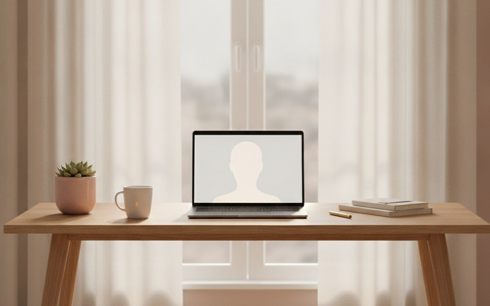
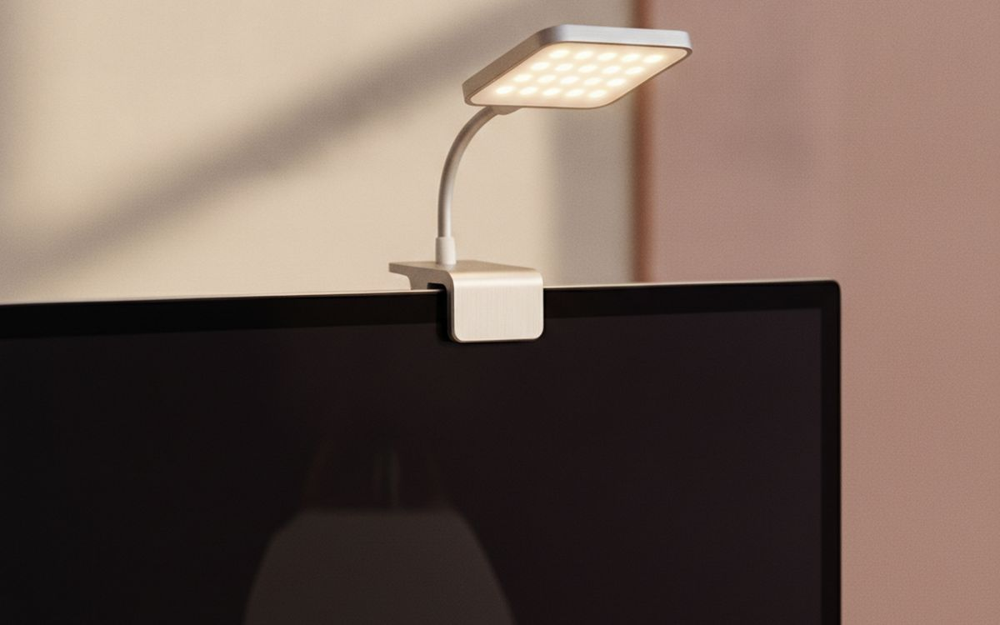
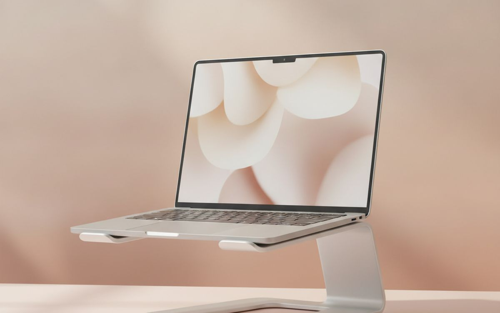
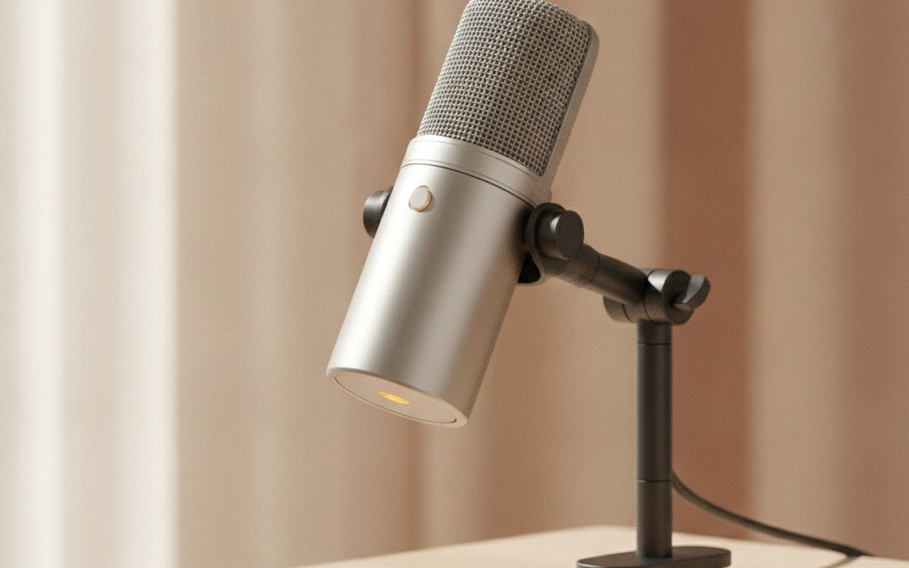
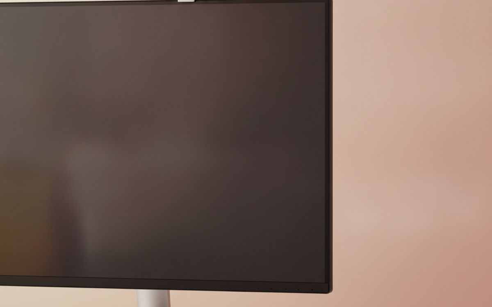
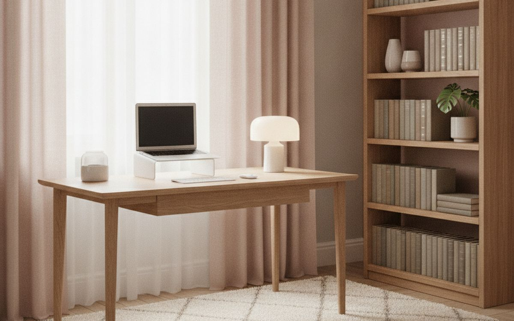
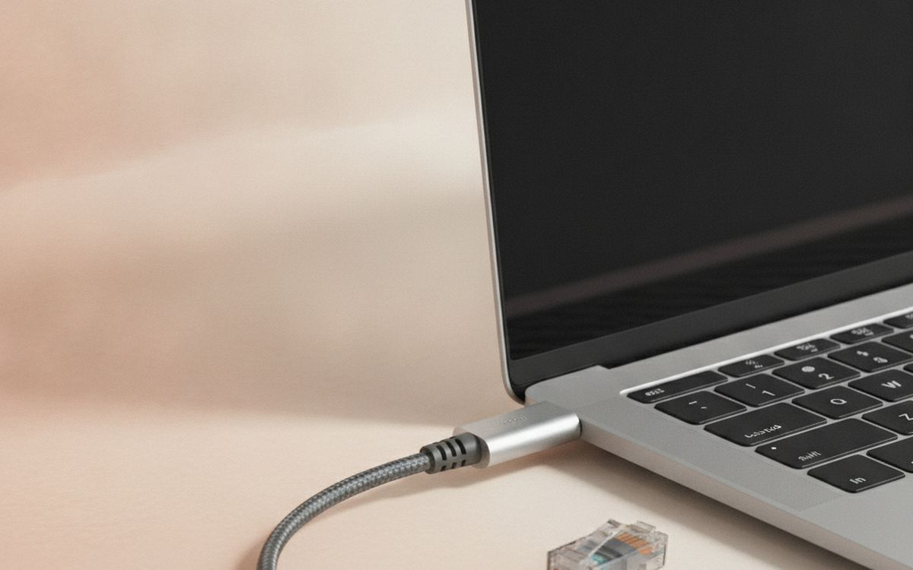
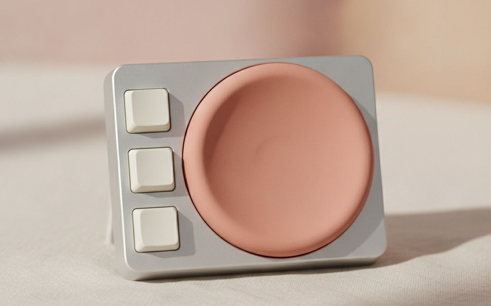

When people want to look better on calls, they buy a 4K webcam. It is usually the wrong first move. What colleagues notice is echo, a voice that cuts out, and a face lit from behind by a window. Fix those and a laptop camera looks fine. Skip them and a $200 webcam just shows your bad lighting in more detail.
So this list is ordered sound first, light second, camera last. Most of the useful items cost less than $50, and several cost nothing.
Prices below are approximate street prices at the time of writing and move around constantly, especially during sale events. Treat them as a rough band for budgeting, not a quote. Always check the live listing before you buy.
בקצרה
A wired or USB headset with a boom mic
The upgrade colleagues actually hear
גילוי נאות. הקישורים בעמוד הזה הם קישורי שותפים. אם תקנו דרכם אנחנו עשויים להרוויח עמלה, בלי תוספת עלות לכם. זה לא משפיע על מה שנכנס לרשימה או על הסדר שלו.
איך בחרנו
These picks come from published audio and webcam reviews, remote-work communities and long-run owner reports, cross-checked against current retail listings. We have not personally tested every item here. We favoured things that work with any call app and that look normal in an office.
השוואה מהירה
המחירים הם הערכה נכון לזמן הכתיבה ומשתנים לעיתים קרובות.
הבחירות
01 · The upgrade colleagues actually hearA wired or USB headset with a boom mic
Laptop microphones pick up the whole room: the keyboard, the fridge, the echo off bare walls. A boom mic sits a few centimetres from your mouth, so your voice is loud and everything else is quiet. It is the single biggest change people will notice. Wired or USB headsets are more reliable than Bluetooth for this, which often drops audio quality when the mic is active. Jabra, Logitech and Poly all make good office headsets at modest prices. The case for it: clear voice, little background noise, stops echo and feedback, and works with every call app. The trade-off is real: headsets look less polished on camera and bluetooth versions often sound worse in calls, so weigh that against how often it would actually get used.
$30-80על מה מוותרים: Headsets look less polished on camera
בעד
- Clear voice, little background noise
- Stops echo and feedback
- Works with every call app
נגד
- Headsets look less polished on camera
- Bluetooth versions often sound worse in calls

02 · The free lighting fixFacing the window, not sitting with it behind you
A bright window behind you turns you into a silhouette, and the camera cannot fix it. Turning your desk so the window is in front of you, or to one side, gives soft, flattering light for free. If you cannot move the desk, draw the blind behind you and move a lamp in front. This one change makes a cheap webcam look good. The case for it: costs nothing, soft, even light on your face, and makes any camera look better. The trade-off is real: depends on the room layout and direct sun is too harsh; use a sheer curtain, so weigh that against how often it would actually get used.
Free ($0)על מה מוותרים: Depends on the room layout
בעד
- Costs nothing
- Soft, even light on your face
- Makes any camera look better
נגד
- Depends on the room layout
- Direct sun is too harsh; use a sheer curtain

03 · Evening calls and dark roomsA small LED panel or key light
When the daylight goes, a small dimmable LED panel placed behind the monitor and slightly above your eyes gives you steady, soft light. Choose one with adjustable colour temperature so you can match the room, and bounce it off a wall if it feels harsh. Ring lights work too, but reflect in glasses; a panel placed to one side avoids that. The case for it: consistent light at any time of day, adjustable brightness and warmth, and small and cheap. The trade-off is real: reflects in glasses if placed straight on and clamps can mark thin monitors, so weigh that against how often it would actually get used.
$20-60על מה מוותרים: Reflects in glasses if placed straight on
בעד
- Consistent light at any time of day
- Adjustable brightness and warmth
- Small and cheap
נגד
- Reflects in glasses if placed straight on
- Clamps can mark thin monitors

04 · Camera at eye levelA laptop stand
A laptop on the desk films you from below, which is unflattering and makes it look like you are looking down at everyone. A stand raises the camera to eye level. Pair it with a separate keyboard and mouse so you can still type comfortably. A stack of books works, but a folding stand packs down and adjusts height. The case for it: eye-level camera angle, better posture during long calls, and folds flat. The trade-off is real: needs a separate keyboard and mouse and cheap stands can wobble when typing, so weigh that against how often it would actually get used.
$20-40על מה מוותרים: Needs a separate keyboard and mouse
בעד
- Eye-level camera angle
- Better posture during long calls
- Folds flat
נגד
- Needs a separate keyboard and mouse
- Cheap stands can wobble when typing

05 · People who talk for a livingA USB desk microphone
If you present, teach, podcast or sell on calls, a USB microphone gives a fuller, warmer voice than a headset. Dynamic mics, such as Samson Q2U or similar, reject room noise better than condenser mics, which is what most home offices need. Place it close to your mouth, just out of camera shot, on a small arm. Use headphones with it to stop echo. The case for it: rich, clear voice, looks professional on camera, and useful for recording too. The trade-off is real: condenser mics pick up room echo and needs headphones to prevent feedback, so weigh that against how often it would actually get used.
$50-130על מה מוותרים: Condenser mics pick up room echo
בעד
- Rich, clear voice
- Looks professional on camera
- Useful for recording too
נגד
- Condenser mics pick up room echo
- Needs headphones to prevent feedback

06 · Laptops used with the lid closedA 1080p webcam
If your laptop lives closed on a stand beside a monitor, you need an external webcam, and it can sit on top of the monitor at eye level. A good 1080p webcam with decent low-light performance is plenty. 4K adds little on calls, because most apps compress the video anyway. Look for a built-in privacy shutter. The case for it: camera sits at eye level on the monitor, better than many older laptop cameras, and privacy shutter on most models. The trade-off is real: 4K is mostly wasted on calls and built-in mics are often poor, so weigh that against how often it would actually get used.
$40-90על מה מוותרים: 4K is mostly wasted on calls
בעד
- Camera sits at eye level on the monitor
- Better than many older laptop cameras
- Privacy shutter on most models
נגד
- 4K is mostly wasted on calls
- Built-in mics are often poor

07 · Echoey roomsSoft furnishings or a rug
Bare walls and hard floors bounce sound around, which makes you sound like you are in a bathroom. A rug, curtains, a bookshelf or a couple of cushions soak it up. Acoustic foam panels work but look like a studio; normal furniture is usually enough and looks better on camera. Try clapping in the room before and after. The case for it: less echo on every call, makes the room nicer too, and no tech required. The trade-off is real: only reduces echo, not outside noise and foam panels can look out of place, so weigh that against how often it would actually get used.
$30-100על מה מוותרים: Only reduces echo, not outside noise
בעד
- Less echo on every call
- Makes the room nicer too
- No tech required
נגד
- Only reduces echo, not outside noise
- Foam panels can look out of place

08 · Frozen videoA wired Ethernet adapter
Freezing video and robotic voices are usually Wi-Fi, not the camera. If your desk is near the router, a USB-C Ethernet adapter and a cable give you a steady connection that does not drop when someone starts streaming in the next room. Many USB-C hubs include an Ethernet port already. The case for it: stops freezing and drop-outs, cheap, and often built into USB-C hubs. The trade-off is real: only practical near the router and needs a free port on thin laptops, so weigh that against how often it would actually get used.
$12-25על מה מוותרים: Only practical near the router
בעד
- Stops freezing and drop-outs
- Cheap
- Often built into USB-C hubs
נגד
- Only practical near the router
- Needs a free port on thin laptops
09 · Looking settledA tidy background or a simple backdrop
Blur and virtual backgrounds flicker around hair and hands. A real background with a plant, a lamp and a shelf looks calm and settled. If the room behind you cannot be tidied, a simple fabric backdrop on a stand, or turning the desk to face a plain wall with one object on it, works well. The case for it: looks more natural than blur, no flicker around your edges, and often free. The trade-off is real: a real background takes some space and backdrops can crease; choose wrinkle-free fabric, so weigh that against how often it would actually get used.
$0-40על מה מוותרים: A real background takes some space
בעד
- Looks more natural than blur
- No flicker around your edges
- Often free
נגד
- A real background takes some space
- Backdrops can crease; choose wrinkle-free fabric

10 · Quick, sure mutingA mute button or stream deck
Hunting for the mute button while the dog barks is a familiar panic. A small USB macro pad or physical mute button lets you mute any app instantly and shows clearly whether you are live. Many can also be set to start calls, share screen and raise your hand. Nice to have, not essential. The case for it: instant mute from any app, clear on/off light, and programmable shortcuts. The trade-off is real: needs some setup per app and another gadget on the desk, so weigh that against how often it would actually get used.
$20-60על מה מוותרים: Needs some setup per app
בעד
- Instant mute from any app
- Clear on/off light
- Programmable shortcuts
נגד
- Needs some setup per app
- Another gadget on the desk
שאלות נפוצות
What should I upgrade first for better calls?
Your microphone. A headset with a boom mic makes a bigger difference than any camera.
Is a 4K webcam worth it?
Rarely for calls. Call apps compress video, so good lighting on a 1080p camera looks better than 4K in bad light.
Ring light or LED panel?
Either works. If you wear glasses, a panel placed off to one side avoids the circle reflection.
Why does my video freeze?
Usually Wi-Fi. Plug in with a cable if you can, or move closer to the router.
הדילים של היום
ראו מה מוזל עכשיו.
דילים →← כל המדריכים
כשותפים של עליאקספרס אנחנו מרוויחים עמלה מרכישות מזכות. המחירים והזמינות נכונים לזמן הפרסום ועשויים להשתנות.